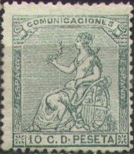
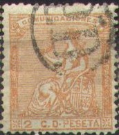
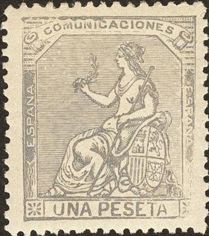

Return To Catalogue - Spain overview - 'Comunicaciones' (issued from 1874 to 1889) - Spain 'Comunicaciones' 1870-1872
Note: on my website many of the
pictures can not be seen! They are of course present in the
catalogue;
contact me if you want to purchase it.


2 c orange 5 c red 10 c green 20 c black 25 c brown 40 c brown 50 c blue 1 Peseta grey 4 Peseta brown 10 Peseta brown
These stamps have perforation 14.
Value of the stamps |
|||
vc = very common c = common * = not so common ** = uncommon |
*** = very uncommon R = rare RR = very rare RRR = extremely rare |
||
| Value | Unused | Used | Remarks |
| 2 c | *** | *** | |
| 5 c | *** | *** | |
| 10 c | * | c | |
| 20 c | R | R | |
| 25 c | *** | *** | |
| 40 c | *** | ** | |
| 50 c | *** | *** | |
| 1 P | *** | *** | |
| 4 P | RR | RR | |
| 10 P | RRR | RRR | |
Special cancellations:



The higher valued stamps with telegraphic cancel (hole) are worth much less than those used for postal purposes.
Postal forgery

Postal forgery of the 10 c with many white spots in the word
'PESETA'. It exists imperforate (see image above).
Another postal forgery exists of the 50 c value, with '50' much larger than in the genuine stamps:

Postal forgeries of the 50 c value.

Postal forgery of the 1 P value. the left leg of the
"U" of "UNA" is too short on top.
Forgeries:

(Forgeries)
I've been told that the above 10 P and 20 c stamps are forgeries, I have no further information.

Sperati forgery of the 4 P value (very deceptive)


Sperati forgeries of the 4 P value


(Sperati forgeries of the 10 P, left: Reproduction 'A', very
deceptive)
I know that Sperati made forgeries of the 4 P value and the 10 P value (2 Reproductions); distinguishing characteristics can be found at http://www.graus.com.
These stamps with inscription "ULTRAMAR 1874" or inscription "ULTRAMAR 1871" were used in Cuba.
For more stamps with inscription 'Comunicaciones' (issued from 1874 to 1889) click here or here for the 1870-1872 issues.
Stamps - Briefmarken - Timbres-Poste - Postzegels - Francobolli - Estampillas
{kind=link}